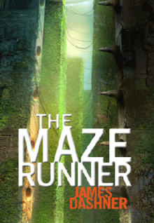

When the doors of the lift crank open, the only thing Thomas remembers is his first name. But he's not alone. He's surrounded by boys who welcome him to the Glade - a walled encampment at the centre of a bizarre and terrible stone maze. Like Thomas, the Gladers don't know why or how they came to be there - or what's happened to the world outside. All they know is that every morning when the walls slide back, they will risk everything - even the Grievers, half-machine, half-animal horror that patrol its corridors, to try and find out.
